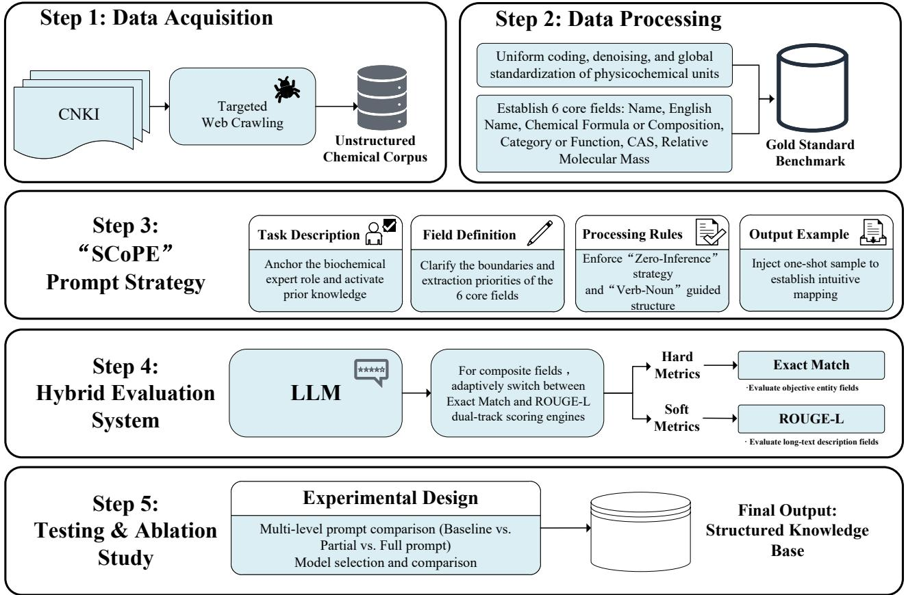

本课不需要任何先验知识。唯一需要知道的是：LLM（大语言模型）就是像 ChatGPT 这样的 AI，能理解和生成文字。
如果你连这个也不确定，也没关系——这节课会顺便讲清楚。
🎬 先问你一个问题
假设你是一个海关工作人员。每天有成千上万的进口货物需要查验——化学品、药品、食品添加剂……你要判断这些东西是不是安全的。
传统做法是：取样 → 送实验室 → 等检测报告。一套流程下来，少则几天，多则几周。
但问题来了——货物量太大了。全检不现实，不检又有风险。
有没有一种办法，能从已有的文档（比如产品说明书、研究报告）里快速提取关键信息，先筛一遍，再决定哪些需要送检？
这就是这篇论文要解决的问题。
问题拆解
1. 有一个急需的信息库
海关需要建立一个「非食用物质智能数据库」，里面存着各种化学品的名称、成分、用途、危险性等信息。有了这个数据库，查验时只需要查一下，就知道这个东西是什么、要不要送检。
但问题是——这些信息分散在大量的非结构化文本中（研究报告、论文摘要、产品说明），格式不统一、内容杂乱，没法直接用。
"非结构化"就是没有固定格式——不像 Excel 表格里每一列都有明确的含义，而是像一篇杂志文章一样，自然语言写的。人类读得懂，但计算机直接读会很困难。
2. 传统方案为什么不行？
论文提到早期的方法有两种：
| 方法 | 怎么做 | 问题在哪 |
|---|---|---|
| 正则表达式 | 写固定的规则（如"匹配以 CAS 开头的 7 位数字"） | 规则写死，换一种表述方式就匹配不到了 |
| 传统深度学习（如 BERT） | 训练专门的模型来做提取 | 需要大量人工标注数据，换了领域就得重新训练 |
3. LLM 有机会，但也有麻烦
大语言模型（LLMs）很擅长理解自然语言。你给它一段文字，它能回答关于这段文字的问题——这就是"信息提取"的基础。
但问题是，LLM 有三毛病：
| 毛病 | 什么意思 | 举个例子 |
|---|---|---|
| 幻觉（Hallucination） | 模型会编造不存在的信息 | 文本里没写 CAS 号，但模型可能自己编一个 |
| 边界模糊（Boundary Blurring） | 分不清不同字段的边界 | 把"用途"的内容写进了"化学式"字段 |
| 格式不一致（Format Inconsistency） | 每次输出格式不一样，没法自动解析 | 这次输出 JSON，下次输出普通文字 |
论文的答案：SCoPE 框架
论文的想法很简单但很聪明：不是换模型，而是把提示词（Prompt）设计得更精细。
SCoPE = Structured and Constrained Prompting Extractor
翻译成人话：通过精心设计的 prompt，让 LLM 乖乖地、稳定地输出结构化的数据。
具体来说，它定义了 6 个核心字段，让 LLM 从一段文字中提取这些信息：
| # | 字段 | 例子（药品"阿昔莫司"） | 类型 |
|---|---|---|---|
| 1 | Name（物质名称） | 阿昔莫司 | 客观唯一 |
| 2 | English Name（英文名） | Acipimox | 客观唯一 |
| 3 | Chemical Formula（化学式） | 5-methylpyrazine-2-carboxylic acid 4-oxide | 客观唯一 |
| 4 | Category or Function（类别/功能） | Nicotinic acid derivative; Inhibits fatty acid release | 描述性 |
| 5 | CAS Number（CAS 登记号） | （无，此处缺失） | 客观唯一 |
| 6 | Relative Molecular Mass（相对分子质量） | （无，此处缺失） | 客观唯一 |
论文的技术路线图（Fig. 1）展示了完整流程：
爬取数据 → 数据清洗 → 设计 SCoPE prompt → 输入 LLM → 输出 JSON → 评估结果

接下来几节课会一步步拆开看每个环节是怎么做的。
这节课的核心
| 问题 | 答案 |
|---|---|
| 这篇论文在解决什么问题？ | 从非结构化化学文本中自动提取关键信息，构建智能数据库 |
| 为什么不用传统方法？ | 正则表达式太死板，深度学习需要大量标注数据 |
| LLM 有什么问题？ | 幻觉、边界模糊、格式不一致 |
| 论文怎么解决的？ | 用 SCoPE 框架——一套精细设计的 prompt 策略 |
| 要提取什么？ | 6 个核心字段（Name, English Name, Chemical Formula, Category/Function, CAS, Molecular Mass） |
课后练习
练习 1：用自己的话解释
不用翻回去看，试着用一句话回答：
"SCoPE 这篇论文到底在干啥？"
你的回答应该包含：
- 要解决什么问题
- 用什么方法
- 产出什么
参考答案
"SCoPE 是一个 prompt 框架，让大语言模型能从混乱的化学文本里，稳定地提取出 6 种关键信息，用于海关搭建智能数据库。"
练习 2：LLM 的三个毛病
不看上面的内容，写出 LLM 在信息提取中的三个主要问题：
- __________（模型编造不存在的）
- __________（分不清字段）
- __________（输出格式不统一）
参考答案
① 幻觉（Hallucination）② 边界模糊（Boundary Blurring）③ 格式不一致（Format Inconsistency）
🤔 练习 3：想一想
如果你来设计这个提取系统，除了论文提到的 6 个字段，你认为化学品的什么信息也很重要？为什么？
（没有标准答案，主要是让你开始思考这个问题域）